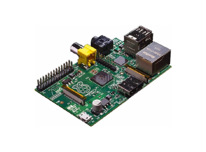
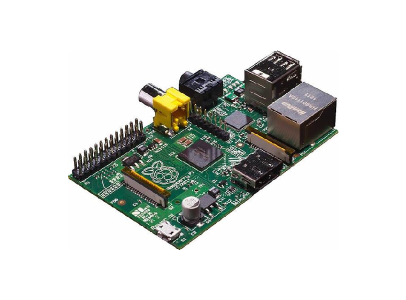
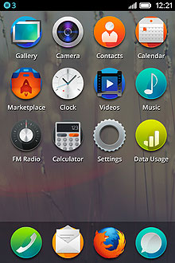
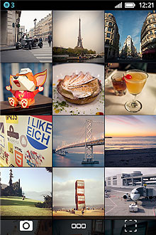
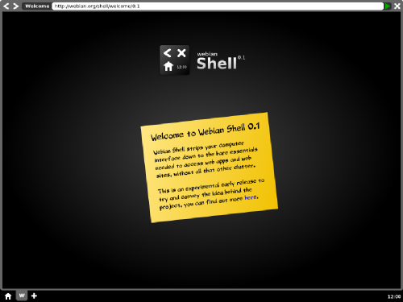
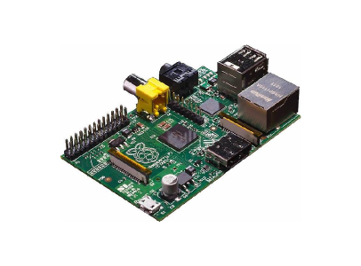

DRD Pi is my hobby electronics project to build a Raspberry Pi powered robot based on the DRDs from the science fiction series, Farscape.
 

I work on Firefox OS for Mozilla. Firefox OS is a mobile operating system for the open web.
 I also started the Webian project with a similar goal. I'm now working on turning Webian into a desktop distribution of Boot to Gecko, the same open source code that powers Firefox OS.

DRD Pi is my hobby electronics project to build a Raspberry Pi powered robot based on the DRDs from the science fiction series, Farscape.
